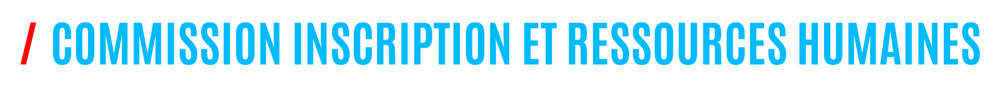

Description
- Composition : La CIRH est généralement composée de lycéens qui occupent des postes liés au recrutement, à la gestion des membres et aux ressources humaines, tels que la directrice générale (responsable du recrutement), etc.
- Recrutement : Elle est responsable du recrutement de nouveaux membres pour le journal, que ce soit des rédacteurs, des photographes, des graphistes, ou d'autres contributeurs.
- Formation : La CIRH organise des formations pour les nouveaux membres afin de les familiariser avec le fonctionnement du journal, les normes éditoriales, les compétences en rédaction, en photographie, ou en conception graphique, etc.
- Gestion des membres : Elle veille à la satisfaction des membres actuels, les soutient dans leur travail, et s'assure qu'ils disposent des ressources nécessaires pour contribuer efficacement au journal.
Objectifs
- Recrutement qualifié : L'objectif principal de la CIRH est de recruter des membres qualifiés qui apportent des compétences et des talents diversifiés au journal.
- Intégration et formation : Elle s'efforce d'assurer une intégration harmonieuse des nouveaux membres en leur fournissant des informations et des formations nécessaires pour qu'ils puissent contribuer efficacement.
- Retention des membres : La CIRH travaille à maintenir un environnement favorable et motivant pour les membres actuels, ce qui favorise leur engagement à long terme.
- Gestion efficace des ressources humaines : Elle veille à ce que les membres soient répartis de manière appropriée dans les différentes équipes du journal et qu'ils disposent des ressources nécessaires pour accomplir leur travail.
- Développement personnel : Les membres de la CIRH acquièrent des compétences en gestion des ressources humaines, en recrutement, en formation, et en relations interpersonnelles, ce qui peut être utile pour leur future carrière.
Présidente : Lamia GORGULU
Membres : Xavier FINI, Lisa GAILLARD, Hugo COMBE-DARGENT
|